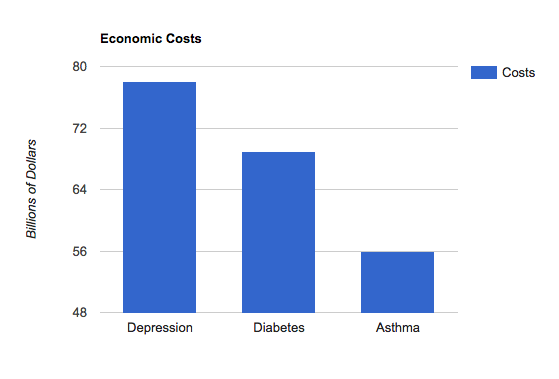
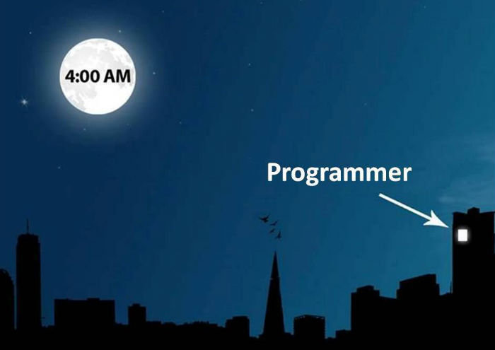
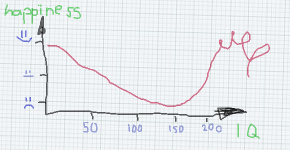
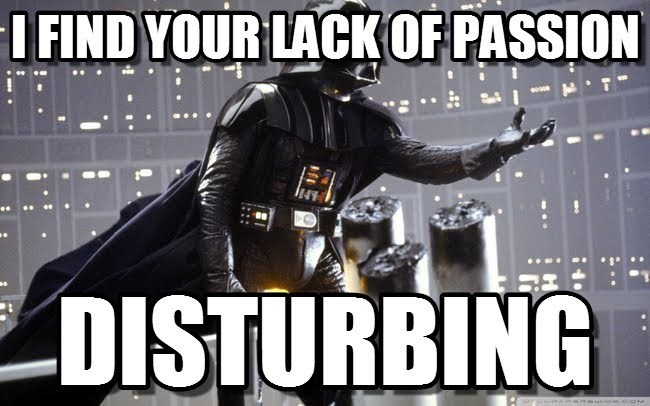
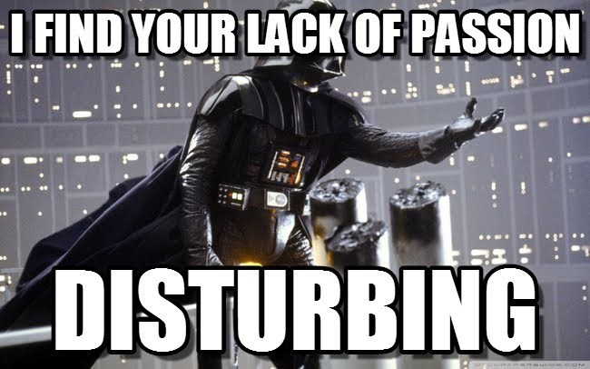

Everyday Depression
by Jon Willesen
Find this talk online
Statistics About Depression
- Affects 14.8 million American adults (6.7%)
- Responsible for 20,000 suicides per year
- (about two-thirds of all suicides)
- 9.8 million people aren't getting treatment
- 80% of people who do get treated show improvement
Presenteeism
Relevance?


?
Steven Townsend
Disability / Disorder ≠ Handicap

Is Depression a Handicap?
 
